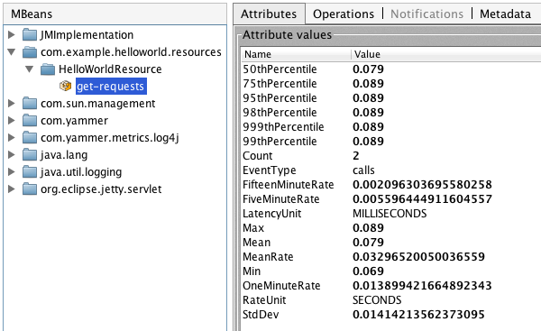

Metric User’s Manual
This goal of this document is to provide you with all the information required to effectively use the Metrics library in your application.
Metrics Core
The central library for Metrics is metrics-core, which provides some basic
functionality:
- The five metric types: gauges, counters, histograms, meters, and timers.
- Health checks.
- Reporting metrics values via JMX, the console, and CSV files.
All metrics are created via either the Metrics class or a
MetricsRegistry. If your application is running alongside other
applications in a single JVM instance (e.g., multiple WARs deployed to an application
server), you should use per-application MetricsRegistry instances. If your
application is the sole occupant of the JVM instance (e.g., a
Dropwizard application), feel free to use
the static methods on Metrics.
For this documentation, we’ll assume you’re using Metrics, but the
interfaces are much the same.
Each metric has a unique metric name, which consists of four pieces of information:
- group
-
The top-level grouping of the metric. When a metric belongs to a class, this
defaults to the class’s package name (e.g.,
com.example.proj.auth). - type
-
The second-level grouping of the metric. When a metric belongs to a class, this
defaults to the class’s name (e.g.,
SessionStore). - name
-
A short name describing the metric’s purpose (e.g.,
session-count). - scope
- An optional name describing the metric’s scope. Useful for when you have multiple instances of a class.
The factory methods on Metrics and MetricsRegistry will accept
either class/name, class/name/scope, or MetricName instances with arbitrary
inputs.
Gauges
A gauge is the simplest metric type. It just returns a value. If, for example,
your application has a value which is maintained by a third-party library, you can
easily expose it by registering a Gauge instance which returns that value:
Metrics.newGauge(SessionStore.class, "cache-evictions", new Gauge<Integer>() {
@Override
public Integer value() {
return cache.getEvictionsCount();
}
});
This will create a new gauge named
com.example.proj.auth.SessionStore.cache-evictions which will return the
number of evictions from the cache.
JMX Gauges
Given that many third-party library often expose metrics only via JMX, Metrics provides
the JmxGauge class, which takes the object name of a JMX MBean and the
name of an attribute and produces a gauge implementation which returns the value of
that attribute:
Metrics.newGauge(SessionStore.class, "cache-evictions",
new JmxGauge("net.sf.ehcache:type=Cache,scope=sessions,name=eviction-count", "Value"));
Counters
A counter is a simple incrementing and decrementing 64-bit integer:
final Counter evictions = Metrics.newCounter(SessionStore.class, "cache-evictions"); evictions.inc(); evictions.inc(3); evictions.dec(); evictions.dec(2);
All Counter metrics start out at 0.
Histograms
A Histogram measures the distribution of values in a stream of data: e.g.,
the number of results returned by a search:
final Histogram resultCounts = Metrics.newHistogram(ProductDAO.class, "result-counts"); resultCounts.update(results.size());
Histogram metrics allow you to measure not just easy things like the
min, mean, max, and standard deviation of values, but also
quantiles like the
median or 95th percentile.
Traditionally, the way the median (or any other quantile) is calculated is to take the entire data set, sort it, and take the value in the middle (or 1% from the end, for the 99th percentile). This works for small data sets, or batch processing systems, but not for high-throughput, low-latency services.
The solution for this is to sample the data as it goes through. By maintaining a small, manageable sample which is statistically representative of the data stream as a whole, we can quickly and easily calculate quantiles which are valid approximations of the actual quantiles. This technique is called reservoir sampling.
Metrics provides two types of histograms: uniform and biased.
Uniform Histograms
A uniform histogram produces quantiles which are valid for the entirely of the histogram’s lifetime. It will return a median value, for example, which is the median of all the values the histogram has ever been updated with. It does this by using an algorithm called Vitter’s R, which randomly selects values for the sample with linearly-decreasing probability.
Use a uniform histogram when you’re interested in long-term measurements. Don’t use one where you’d want to know if the distribution of the underlying data stream has changed recently.
Biased Histograms
A biased histogram produces quantiles which are representative of (roughly) the last five minutes of data. It does so by using a forward-decaying priority sample with an exponential weighting towards newer data. Unlike the uniform histogram, a biased histogram represents recent data, allowing you to know very quickly if the distribution of the data has changed. Timers use biased histograms.
Meters
A meter measures the rate at which a set of events occur:
final Meter getRequests = Metrics.newMeter(WebProxy.class, "get-requests", "requests", TimeUnit.SECONDS); getRequests.mark(); getRequests.mark(requests.size());
A meter requires two additional pieces of information besides the name: the
event type and the rate unit. The event type simply
describes the type of events which the meter is measuring. In the above case, the meter
is measuring proxied requests, and so its event type is "requests". The
rate unit is the unit of time denominating the rate. In the above case, the meter is
measuring the number of requests in each second, and so its rate unit is
SECONDS. When combined, the meter is measuring requests per second.
Meters measure the rate of the events in a few different ways. The mean rate is
the average rate of events. It’s generally useful for trivia, but as it represents the
total rate for your application’s entire lifetime (e.g., the total number of requests
handled, divided by the number of seconds the process has been running), it doesn’t
offer a sense of recency. Luckily, meters also record three different
exponentially-weighted moving average rates: the 1-, 5-, and 15-minute moving
averages. (Just like the Unix load averages visible in uptime or
top.)
Timers
A timer is basically a histogram of the duration of a type of event and a meter of the rate of its occurrence.
final Timer timer = Metrics.newTimer(WebProxy.class, "get-requests", TimeUnit.MILLISECONDS, TimeUnit.SECONDS);
final TimerContext context = timer.time();
try {
// handle request
} finally {
context.stop();
}
A timer requires two additional pieces of information besides the name: the
duration unit and the rate unit. The duration unit is
the unit of time in which the durations of events will be measured. In the above
example, the duration unit is MILLISECONDS, meaning the timed event’s
duration will be measured in milliseconds. The rate unit in the above example is
SECONDS, meaning the rate of the timed event is measured in calls/sec.
Health Checks
Metrics also provides you with a consistent, unified way of performing application health checks. A health check is basically a small self-test which your application performs to verify that a specific component or responsibility is performing correctly.
To create a health check, extend the HealthCheck class:
public class DatabaseHealthCheck extends HealthCheck {
private final Database database;
public DatabaseHealthCheck(Database database) {
super("database");
this.database = database;
}
@Override
protected Result check() throws Exception {
if (database.ping()) {
return Result.healthy();
}
return Result.unhealthy("Can't ping database");
}
}
In this example, we’ve created a health check for a Database class on which
our application depends. Our fictitious Database class has a
ping() method, which executes a safe test query (e.g.,
SELECT 1). ping() returns true if the query
returns the expected result, returns false if it returns something else,
and throws an exception if things have gone seriously wrong.
Our DatabaseHealthCheck, then, takes a Database instance and
in its check() method, attempts to ping the database. If it can, it returns
a healthy result. If it can’t, it returns an unhealthy
result. (Exceptions thrown inside a health check’s check() method are
automatically caught and turned into unhealthy results with the full stack trace.)
To register a health check, either use the HealthChecks singleton or a
HealthCheckRegistry instance:
HealthChecks.register(new DatabaseHealthCheck(database));
You can also run the set of registered health checks:
for (Entry<String, Result> entry : HealthChecks.run().entrySet()) {
if (entry.getValue().isHealthy()) {
System.out.println(entry.getKey() + ": PASS");
} else {
System.out.println(entry.getKey() + ": FAIL");
}
}
Reporters
Reporters are the way that your application exports all the measurements being made by
its metrics. metrics-core comes with three ways of exporting your metrics:
JMX, console, and CSV.
JMX
By default, Metrics always registers your metrics as JMX MBeans. To explore this you
can use VisualVM (which ships with most JDKs
as jvisualvm) with the VisualVM-MBeans plugins installed or JConsole (which
ships with most JDKs as jconsole:

Bonus points: If you double-click any of the metric properties, VisualVM will start graphing the data for that property.
Reporting via JMX is always enabled, but we don’t recommend that you try to gather metrics from your production environment. JMX’s RPC API is fragile and bonkers. For development purposes and browsing, though, it can be very useful.
Console
For simple benchmarks, Metrics comes with ConsoleReporter, which
periodically reports all registered metrics to the console:
ConsoleReporter.enable(1, TimeUnit.SECONDS);
CSV
For more complex benchmarks, Metrics comes with CsvReporter, which
periodically appends to a set of .csv files in a given directory:
CsvReporter.enable(new File("work/measurements"), 1, TimeUnit.SECONDS);
For each metric registered, a .csv file will be created, and every second
its state will be written to it as a new row.
Other Reporters
Metrics has other reporter implementations, too:
- MetricsServlet is a servlet which not only exposes your metrics as a JSON object, but it also runs your health checks, performs thread dumps, and exposes valuable JVM-level and OS-level information.
- GangliaReporter allows you to constantly stream metrics data to your Ganglia servers.
- GraphiteReporter allows you to constantly stream metrics data to your Graphite servers.
Metrics and Ehcache
The metrics-ehcache module provides InstrumentedEhcache, a
decorator for Ehcache
caches:
final Cache c = new Cache(new CacheConfiguration("test", 100));
MANAGER.addCache(c);
this.cache = InstrumentedEhcache.instrument(c);
Instrumenting an Ehcache instance creates gauges for all of the
Ehcache-provided statistics:
hits |
The number of times a requested item was found in the cache. |
in-memory-hits |
Number of times a requested item was found in the memory store. |
off-heap-hits |
Number of times a requested item was found in the off-heap store. |
on-disk-hits |
Number of times a requested item was found in the disk store. |
misses |
Number of times a requested item was not found in the cache. |
in-memory-misses |
Number of times a requested item was not found in the memory store. |
off-heap-misses |
Number of times a requested item was not found in the off-heap store. |
on-disk-misses |
Number of times a requested item was not found in the disk store. |
objects |
Number of elements stored in the cache. |
in-memory-objects |
Number of objects in the memory store. |
off-heap-objects |
Number of objects in the off-heap store. |
on-disk-objects |
Number of objects in the disk store. |
mean-get-time |
The average get time. Because ehcache supports JDK1.4.2, each
get time uses System.currentTimeMillis(), rather than
nanoseconds. The accuracy is thus limited.
|
mean-search-time |
The average execution time (in milliseconds) within the last sample period. |
eviction-count |
The number of cache evictions, since the cache was created, or statistics were cleared. |
searches-per-second |
The number of search executions that have completed in the last second. |
accuracy |
A human readable description of the accuracy setting. One of "None", "Best Effort" or "Guaranteed". |
It also adds full timers for the cache’s get and put methods.
The metrics are all scoped to the cache’s name.
Metrics and Ganglia
TODO
Metrics and Graphite
TODO
Metrics and Guice
TODO
Metrics and HttpClient
The metrics-httpclient provides InstrumentedClientConnManager
and InstrumentedHttpClient, two instrumented versions of
Apache HttpClient 4.x
classes.
InstrumentedClientConnManager is a thread-safe
ClientConnectionManager implementation which measures the number of open
connections in the pool and the rate at which new connections are opened.
InstrumentedHttpClient is a HttpClient implementation which
has per-HTTP method timers for HTTP requests.
Metrics and JDBI
TODO
Metrics and Jersey
The metrics-jersey module provides
InstrumentedResourceMethodDispatchAdapter, which allows you to instrument
methods on your Jersey resource
classes:
@Path("/example")
@Produces(MediaType.TEXT_PLAIN)
public class ExampleResource {
@GET
@Timed
public String show() {
return "yay";
}
}
The show method in the above example will have a timer attached to it,
measuring the time spent in that method.
Use of the @Metered and @ExceptionMetered annotations is also
supported.
Metrics and Jetty
TODO
Metrics and Log4j
The metrics-log4j module provides InstrumentedAppender, a
Log4j Appender implementation which records the rate of logged events
by their logging level.
You can either add it to the root logger programmatically:
LogManager.getRootLogger().addAppender(new InstrumentedAppender());
Or you can add it via Log4j’s XML configuration:
<?xml version="1.0" encoding="UTF-8" ?>
<!DOCTYPE log4j:configuration SYSTEM "log4j.dtd">
<log4j:configuration xmlns:log4j="http://jakarta.apache.org/log4j/">
<appender name="console" class="org.apache.log4j.ConsoleAppender">
<param name="Target" value="System.out"/>
<layout class="org.apache.log4j.PatternLayout">
<param name="ConversionPattern" value="%-5p %c{1} - %m%n"/>
</layout>
</appender>
<appender name="metrics" class="com.yammer.metrics.log4j.InstrumentedAppender"/>
<root>
<priority value="debug"/>
<appender-ref ref="console"/>
<appender-ref ref="metrics"/>
</root>
</log4j:configuration>
Metrics and Logback
The metrics-logback module provides InstrumentedAppender, a
Logback Appender implementation which records the rate of logged events
by their logging level.
You can either add it to the root logger programmatically:
final LoggerContext factory = (LoggerContext) LoggerFactory.getILoggerFactory(); final Logger root = factory.getLogger(Logger.ROOT_LOGGER_NAME); final InstrumentedAppender metrics = new InstrumentedAppender(); metrics.setContext(root.getLoggerContext()); metrics.start(); root.addAppender(metrics);
Or you can add it via Logback’s XML configuration:
<configuration>
<appender name="STDOUT" class="ch.qos.logback.core.ConsoleAppender">
<encoder>
<pattern>%-4relative [%thread] %-5level %logger{35} - %msg %n</pattern>
</encoder>
</appender>
<appender name="metrics" class="com.yammer.metrics.logback.InstrumentedAppender"/>
<root level="DEBUG">
<appender-ref ref="STDOUT"/>
<appender-ref ref="metrics"/>
</root>
</configuration>
Metrics and Scala
TODO
Metrics Servlet
TODO
Metrics and Spring
The metrics-spring module enables the use of Metrics annotations with
Spring AOP,
complete with simple XML configuration:
<beans xmlns="http://www.springframework.org/schema/beans"
xmlns:xsi="http://www.w3.org/2001/XMLSchema-instance"
xmlns:metrics="http://www.yammer.com/schema/metrics"
xsi:schemaLocation="http://www.yammer.com/schema/metrics http://www.yammer.com/schema/metrics/metrics.xsd">
<metrics:metrics-registry id="metrics"/>
<metrics:health-check-registry id="health"/>
<metrics:annotation-driven metrics-registry="metrics" health-check-registry="health"/>
<metrics:jmx-reporter id="metricsJmxReporter" metrics-registry="metrics"/>
</beans>
Metrics and Web Applications
TODO